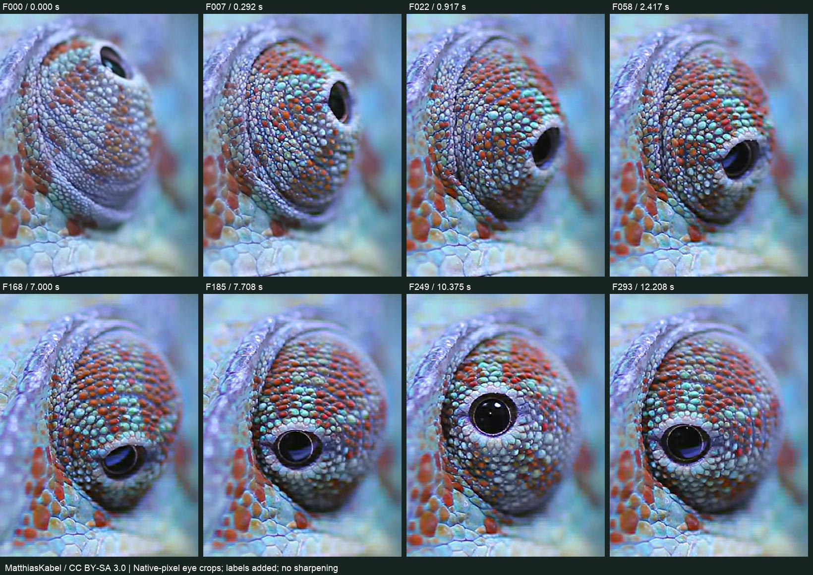

Kaynağın kimliğini doğruladık
MatthiasKabel'in Commons videosunu, dosya hashini ve lisansını kaydettik. Önceki araştırmadaki kliple aynı kaynak; yeni bağımsız hayvan örneği saymadık.
FURCIFER PARDALIS / ARAŞTIRMA ARŞİVİ V1
Hangi kareye baktık, ne gördük, neyi ölçemedik ve modelde neyi değiştirmeyi önerdik? Kanıt ve yorumları aynı yerde izleyebilirsin.
Arşiv rehberi · Ayrıntılı analiz · Kaynak kaydı · 360 kare dökümü
Gezinti: 960×540 sıkıştırılmış önizleme. Ölçüm kaynağı 1920×1080; seçili 10 kare tam boy bağlantısıyla saklandı. Zaman = kare / 24; gerçek kare zaman damgaları ayrıca doğrulanmadı. Yapay ara kare yok.
MatthiasKabel'in Commons videosunu, dosya hashini ve lisansını kaydettik. Önceki araştırmadaki kliple aynı kaynak; yeni bağımsız hayvan örneği saymadık.
15 panonun her biri 24 ardışık kare içeriyor. Tüm panolar görüldü. Bu işlem her karede pul parçacığı takibi veya tek tek anatomik ölçüm yapıldığı anlamına gelmiyor.
F000, F007, F022, F058, F168, F185, F249 ve F293: açıklığın yönü, kök kıvrımları ve optik görünüm. F000, F168, F336: baş, burun, ağız ve yaklaşık görünür sınırlar.
Geniş burun tablası, yükselen yan kenarlar ve ince kapalı çene hattı için ayrı biçim çalışması önerdik. Onaylı gözün deseni ve hareketi korundu; bu analizde Blender modeli değiştirilmedi.
Gözlem: Pullu kapak kubbesi, esnek kök ve yükseltili baş kenarı ayrı okunuyor.
Yorum: Kafanın merkez yüzeyi ve yanak hacmi, gözün algılanan büyüklüğünü etkiliyor.
Karar: Onaylı göz korunacak; önce kafa biçimi, sonra eşlenmiş kamerada oran kontrolü.
Gözlem: Geniş orta tabla, iki yükseltili kenar ve önde kısa çıkıntı var.
Sınır: Uç bulanık; çatal derinliği ve burun deliği biçimi bu klipten ölçülemez.
Karar: Tek bombeli kama yerine bu hacimleri ayrı ve yumuşak bağlı kur.
Gözlem: İnce kapanma hattının iki yanında pullu kenarlar; üzerinde ayrı burun çıkıntısı.
Sınır: Belirgin açılma döngüsü yok; çene eklemi ve ağız içi doğrulanmadı.
Karar: Yüzeyle birleşen ince hat; boşta duran çizgi veya kalın halka yok.

Yakın pullu kapağın görüntüdeki yatay genişliği / iki gözün görünür dış uçları arasındaki yatay açıklık. Gerçek göz çapı / kafa uzunluğu değil. Aynı bireyin üç pozu; sınır başına yaklaşık ±15 piksel okuma toleransı. Perspektif düzeltilmedi; tür ortalaması çıkarılmadı.
Ham noktalar ve ölçüm tanımı. Önceki yandan fotoğraf oranları bu farklı ölçüyle birleştirilmez.
Olay olmayan kareler “tamamen hareketsiz” diye etiketlenmedi. Notlar 2B görsel gözlemdir; kesin hareket başlangıcı, 3B bakış açısı veya fizyolojik hız ölçümü değildir.
Özgün inceleme sırasında kullanılan panolar aynen saklandı. Bağlantı tam boy panoyu açar.
Gerçek 3B göz/kafa oranı, deri kalınlığı ve gerinimi, pul parçacıklarının hareketi, çene açılma davranışı ve uzuv eklemlerinin hareketi ölçülmedi. Son saniyelerde başın/kameranın konum değişimi göz hareketiyle karışıyor. Bu, AI destekli görsel araştırmadır; bilimsel tür normu veya anatomik doğruluk sertifikası değildir.
Wikimedia Commons'ta özgün video · Gömülü oynatıcı
Sayfa görüntüleme sırasında üçüncü taraf oynatıcı otomatik yüklenmez. Yukarıdaki bağlantı internet gerektirir.